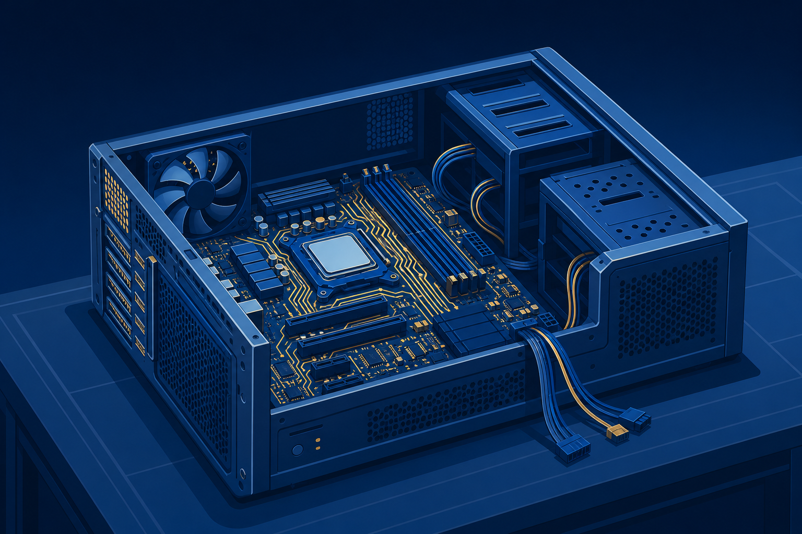
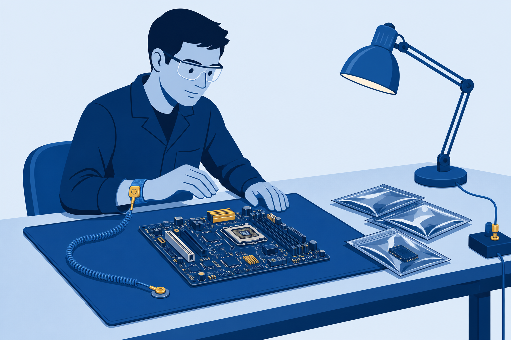

01
Identify
ports, cables, and connectors on sight, current and legacy.

Cables, connectors, and the motherboard: where every component finds its address.
Start here: Look at the nearest device port. Could you name it, and what it can and cannot do?
ports, cables, and connectors on sight, current and legacy.
each connector to its job and its speed limit.
a motherboard safely, from ESD strap to front-panel headers.
The editing lab’s new flash drive is fast. The port even looked right. So why the wait?
Talk with a partner:
The drive is healthy and the file is fine. What would you check first?
Inside the case: components. Outside the case: peripherals.
Cable speeds advertise bits per second. Divide by eight before you promise a transfer time.
Hosts and hubs
Printers, older gear
Older phones
Reversible, current
Blue plastic often means USB 3.x. No rule requires it, so read the documentation.
Best-case math for the traced 20 GB file. Real copies run slower, but the ratios hold.
Audio plus video everywhere consumer gear lives. Versions raise resolution, color, and refresh ceilings.
Audio plus video, high refresh rates, and daisy chaining several monitors from one connector.
Question: The design lab wants two 4K monitors per PC. Which port makes that one-cable clean?
Versions 3 and 4 move 40 Gbps and daisy chain displays and storage. The bolt icon by the port is the tell.
iPhone and iPad for a decade. New devices ship USB-C instead, so adapters keep both alive on your bench.
Same oval, different powers. Read the icon before you promise performance.
7-pin L. Rev 1/2/3 = 1.5 / 3 / 6 Gbps
15-pin L from the supply
Red 5 V · Yellow 12 V · Black ground
eSATA carries SATA outside the case, up to 2 m, on a connector internal cables cannot share.
One A/V workstation build carries the rest of class. Every part on the sheet needs a correct connection.
Parts stay in their ESD bags for now.
A zap you cannot feel can still kill a chip.

DIMM generations are keyed: DDR4 never seats in a DDR5 slot. Chapter 3 goes deep on what fills these slots.
More lanes, more bandwidth. The build’s graphics card claims the ×16. Versions stay backward compatible.
Bigger boards buy expansion slots. Smaller boards buy quiet corners. The build sheet chose ATX.
Read the board manual first.
Snap it into the case.
Match every board hole.
CPU and RAM on the bench.
Align, then screw the board in.
P1 power, fans, front-panel headers.
Route and tie for airflow.
Drives the display ports. Claims the ×16 slot.
Ingests HDMI video for streams and recordings.
green out blue in pink mic orange sub
RJ-45 copper, fiber, or antennas on a card.
Commit first: What happens if the board goes in anyway and power arrives?
Wide pin grid. Digital, analog, or both.
15 pins, 3 rows. Analog to the end.
RS-232. The console port lives on.
Adapters bridge the eras: passive when signals agree, active when they must be converted.
A port is USB-C shaped. How do you know it is Thunderbolt?
Name the first three steps of a motherboard install, in order.
Which cable wires the two-monitor design desk, and why?
Next step: Run the CertMaster labs: Install USB Devices, then Choose and Install a Motherboard. Chapter 3 fills the board: power, storage, memory, and CPUs.